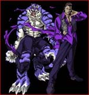

Forums galactiques > Taverne galactique : lieu de discussion informel > Club des célibataires
| Général_Louis Réputation à la taverne : 1323  02/04 ETU 11:44 | Score : 0 Détails Je vous pardonne, mais votre infidélité a du me coûter mon honneur, mais je vous pardonne quand même.
Le Général Louis quitta cette salle. | ||
| Vladimir Harkonnen Réputation à la taverne : 2306  02/04 ETU 11:47  | Score : 0 Détails J'ai reçu un message de Lyna "à la rechercher de sexe". Je rappelle pour la énième fois que les femmes sont très pratiques pour servir le petit déjeuner au lit, mais je préfère les HOMMES !
| ||
| Ace Azzamen Réputation à la taverne : 1199  02/04 ETU 12:00 | Score : 0 Détails Commandant Harkonnen, vous m'envoyez mort de rire.
Et cette Lyna ne manque pas d'air ! C'est drôle qu'ici, les histoires d'amour se focalisent sur des thèmes impossibles: mariage d'un hétéro et d'un lesbienne, tentatives d'aguichement d'une bi (à vérifier ...) sur un homosexuel ... L'avantage, c'est que moi, ben je reste TRANQUILLE. allez, je vais continuer à me gondoler tout seul. ///// Et il repartit explosé de rire ///// | ||
| daetha Réputation à la taverne : 526  02/04 ETU 12:01 | Score : 0 Détails J'ai l'impression qu'il y en a un qui comprends pas tout !
| ||
| Ace Azzamen Réputation à la taverne : 1199 02/04 ETU 12:03 | Score : 0 Détails Hé hé, y en a mis du temps à venir, Daetha ...
Je m'en doutais que tu aurais répondu ainsi ///// Clin d'oeil et sourire ironique en coin ///// Es-tu sûre que je ne comprends pas tout ... | ||
| daetha Réputation à la taverne : 526 02/04 ETU 12:06 | Score : 0 Détails Bah au lieu de me faire tourner en bourique, de me regarder me ronger les ongles tout les soir près de mon X-com en attendant un message de toi, dis le, dis moi ce que je voudrais savoir.
| ||
| Ace Azzamen Réputation à la taverne : 1199 02/04 ETU 12:15 | Score : 0 Détails [ HRP: ça me fait penser à la discussion entre un sadique et un masochiste:
Maso: Fais moi mal, fais moi mal Sadiq: Nooooon, noooooon, nooooooooooooooooon ! /HRP] Désolé, mon x-com est débranché depuis quelques temps, pis je suis pas à l'aise avec les femmes. Pis je suis pas fait pour mener une vie de couple, pis je suis pas fait pour toi, pis je suis pas violent moi ( comment ça, cet argument n'est pas crédible ?), pis j'suis pas beau (ça, c'est incontestable, ya qu'à me voir IRL !), pis je ne veux pas t'éconduire en public. Pis on en discutera plus tard, là, j'suis pressé. | ||
| Vladimir Harkonnen Réputation à la taverne : 2306 02/04 ETU 13:15 | Score : 0 Détails Là, c'est moi qui suis plié de rire !! Aze... il n'y a donc personne au sein des Ex Machina qui veuille de vous ? Je vous trouve personnellement délicieux, alors je ne vois pas pourquoi les femmes vous refuseraient ? (si ce n'est pour vous laisser revenir à votre vraie nature et me rejoindre dans mon palais)
Je plussoie également le discours sur le maso et le sadique !! | ||
| Général_Louis Réputation à la taverne : 1323 02/04 ETU 13:17 | Score : 0 Détails STOP, ce sujet n'est pas fait pour faire la guerre.
Allez sur un sujet d'un autre type pour celà. | ||
| Ace Azzamen Réputation à la taverne : 1199 02/04 ETU 13:23 | Score : 0 Détails ///// deuxième grosse goutte de sueur qui coule sur le crâne d'Ace /////
" J'vais me déshydrater si je continue à suer comme cela ... Louis, on ne fait pas la guerre ici, on discute des affaires de coeur. Vladimir, re-merci pour la proposition et pour le compliment mais je reste célibataire pour l'instant. Au cas où j'aie envie de revenir à mes premiers instincts (à la phase d'excitation égocentrique pour reprendre la pensée de Freud), je penserai à vous. Désespérez pas Oramar, malgré la pénurie de commandants dans cette Galaxie, je suis sûr qu'une ne résistera pas à votre charme, il vous faut seulement la trouver. | ||
| Shenlong Réputation à la taverne : 0  02/04 ETU 13:34 | Score : 0 Détails Nom du perso: Shenlong
Age du perso: eu....née comme ça Profil: Fédération Type: neutre Atout: Habile dans beaucoup de domaines Sexe: enorme française Yeux: rouge Recherche Sexe: Femme ou tigresse Yeux: rose ou mauve Type: Sadique mais pas avec moi Atout: grosse poitrine Profil: interessente et calculatrice Age: ...mais c'est quoi ça ?? | ||
| Arthérius Réputation à la taverne : 1559  02/04 ETU 14:38 | Score : 0 Détails Beuh et quand je disais que j'étais surement plus malheureux...
Meme pas un X-com d'une commandante... C'est la misère... Le commandant Arthérius appliqua son laserX346V2 sur sa tempe droite et pressa la détente... CHLOUIF... on vit la tete du commandant recouverte d'une epaisse couche de suif... Cette fichue amorce protonique avait encore laché... | ||
| Général_Louis Réputation à la taverne : 1323 02/04 ETU 17:51 | Score : 0 Détails Un petit UP
| ||
| Ocheeva Réputation à la taverne : 20  02/04 ETU 19:13 | Score : 0 Détails Alors ici,il n'y a aucun argonien?
Je vois que la race la plus présente est celle des humains...Dommage..Prévenez-moi les jeunes argoniens intéressé!! | ||
| Général_CSI Réputation à la taverne : 75  02/04 ETU 19:41 | Score : 0 Détails Nom du perso: Général_CSI
Age du perso: 26 ans Profil: 118 218 Type: humain >_< Atout: jeune, maîtrise du côté obscur de la force -_- Sexe: mâle très actif Yeux: marron Recherche Sexe: Femme Yeux: n'importe Type: gentille, fidèle, active ^_^ Atout: intelligente, belle Age: Heu pas trop vieille :D | ||
| Général_Louis Réputation à la taverne : 1323 02/04 ETU 19:44 | Score : 0 Détails Nom du perso: Général_Louis
Age du perso: 24 ans Profil: Fédération Type: Pacifique Atout: Beau, Intelligent, Sympas, Gentil, Sage. Sexe: Homme Yeux: Bleu Recherche Sexe: Femme Yeux: N'importe ( attirance pour les yeux clairs) Type: Mince ou normal Atout: Charmante, délicate, jolie... Profil: N'importe Age: entre 22 et 32 ans | ||
| imperatrice Jade Réputation à la taverne : 469  02/04 ETU 23:02 | Score : 0 Détails Nom du perso: Impératrice jade
Age du perso: 25 Profil: Fédérée Type: Mercenaire,diplomate et incorruptible Atout: Ma beautée et ma fermetée Sexe: femme Yeux: bleu Recherche Sexe: femme aimant le sexe Yeux: vert si possible Type: anarchiste Atout: Folle de toute nouvelle expérience Profil: belle et meutriére Age: 18-30 ans | ||
| Lord Ax Réputation à la taverne : 423  03/04 ETU 22:01 | Score : 0 Détails Nom du perso: Lord Ax
Age du perso: inconnu (dans cette Galaxie depuis plus de 700 ans) Profil: Guildéen Type: Marchand, diplomate, politicien, spéculateur et justicier Atout: Droiture, respect des lois et des amis Sexe: inconnu (homme supposé) Yeux: n'en a plus (voir le topic "à quoi je ressemble") Recherche Sexe: Femme Yeux: grands et profonds (sans préférence pour la couleur) Type: pas de préférence Atout: Fidèle et bonne danseuse (plutôt danse du ventre et autres attribus féminins que valse ...) Profil: belle et sensuelle, câline de préférence Age: 16-25 ans | ||
| Cesco Imperator Réputation à la taverne : 3122  05/04 ETU 10:15 | Score : 0 Détails Pour Anko, un petit Up !
| ||
| Anko Réputation à la taverne : 717  05/04 ETU 10:34 | Score : 0 Détails Pour faire plaisir à Cesco et à Artherius...
Nom du perso: Anko Age du perso: 22ans Profil: Allinatiste un jour, alliantiste toujours! Type: Diplomate, secrète, intelligente (enfin je crois), rusée... Atout: Maligne. Sexe: feminin Yeux: deux ^^ bruns Recherche Sexe: Homme Yeux: deux si possible si moins et bien tant pis. (Bleus de préférence) Type: nspp Atout: malin, beau, protecteur, cultivé, parlant bien le français... Profil: nspp Age: 18 à 28 ans... |
Forums galactiques > Taverne galactique : lieu de discussion informel > Club des célibataires